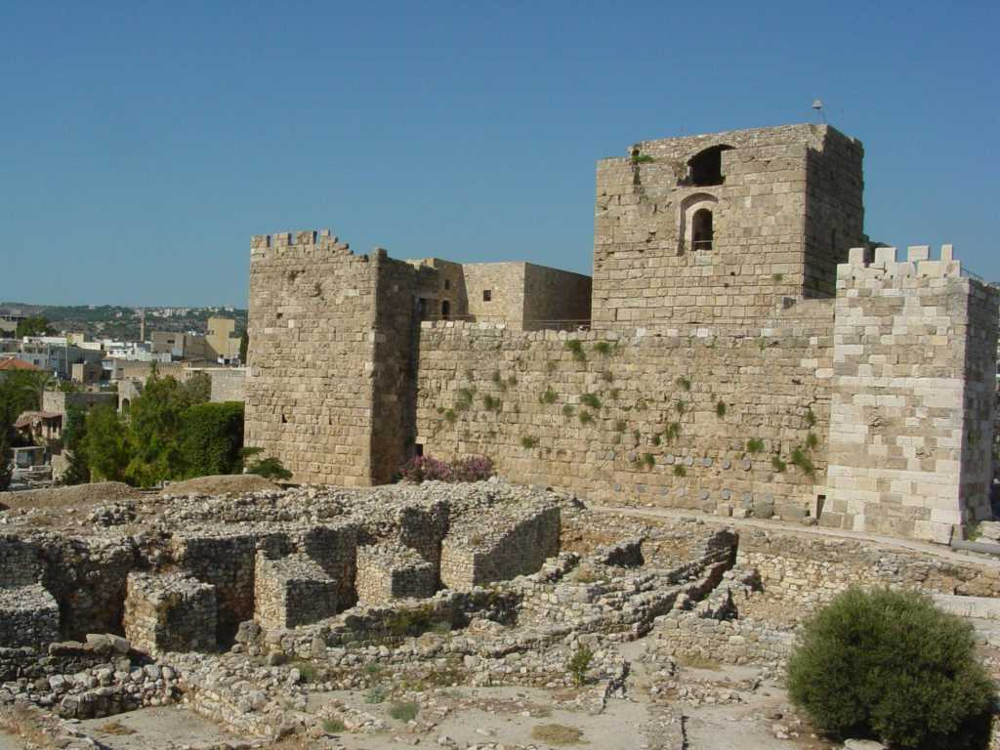

Byblos
紀元前５,０００年に集落ができ紀元前３,０００年フェニキア人により栄え紀元前後にはローマ帝国の港町として栄えた世界で最も古い街の一つと言われる 古代に紙パピルスを盛んに輸出入した頃からビブロスの名がつきこの街の名が聖書バイブルの語源ともなったと伝えられている また子音文字と母音文字の組み合わせによる世界最古のアルファベット文字が刻まれた石棺やビブロス人形と称される青銅製としては世界最古の装飾品が発見されている The Bronze Age in The National Museum of Beirut